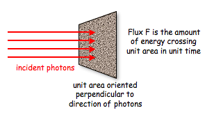
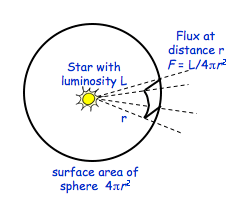
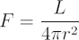

Flux (or radiant flux), F, is the total amount of energy that crosses a unit area per unit time. Flux is measured in joules per square metre per second (joules/m2/s), or watts per square metre (watts/m2).

The flux of an astronomical source depends on the luminosity of the object and its distance from the Earth, according to the inverse square law:


where F = flux measured at distance r,
L = luminosity of the source,
r= distance to the source.